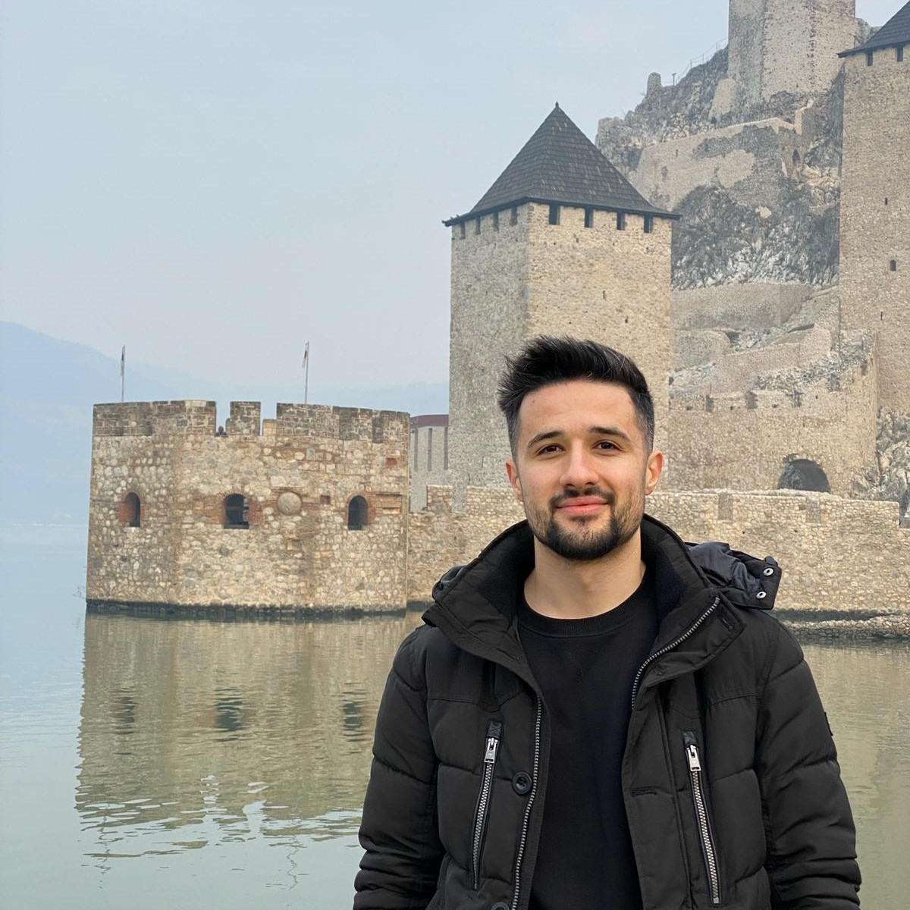

About Me
My name is Silviu Iordache, I was born in Craiova, Romania in 1992
My professional career started in the video game industry, where I worked for almost 6 years as a game designer and content & level creator
In 2018, I decided to quit my career in the video game industry and pursue something new. The road led me to web development. For the past year I've been learning web programming and I got hired as a full-stack web programmer at Caphyon, in Craiova.
